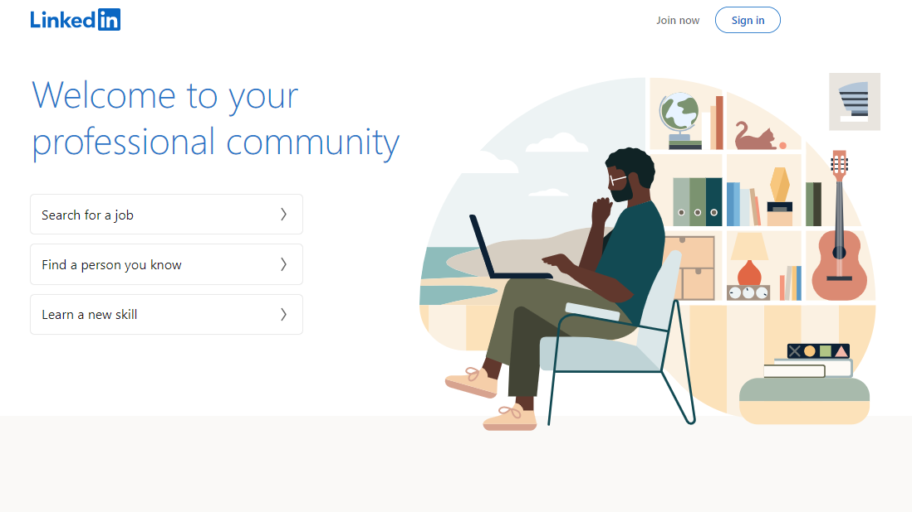
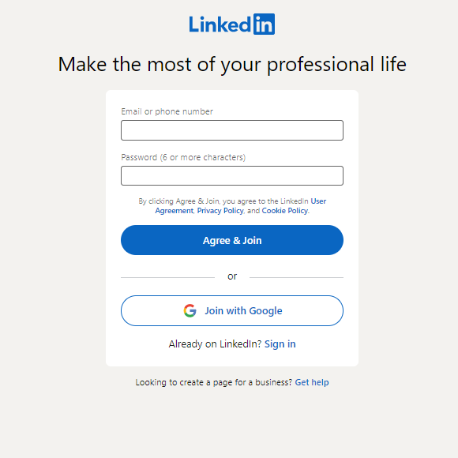
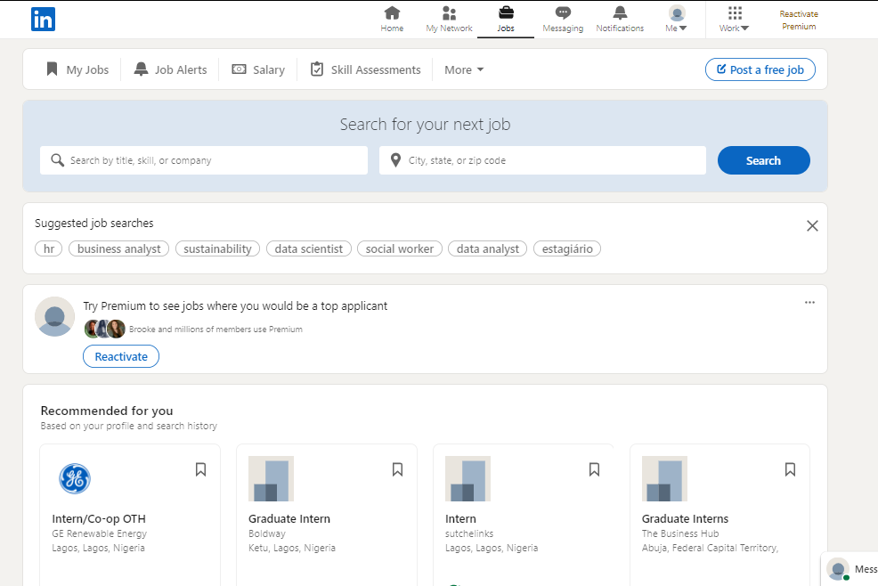
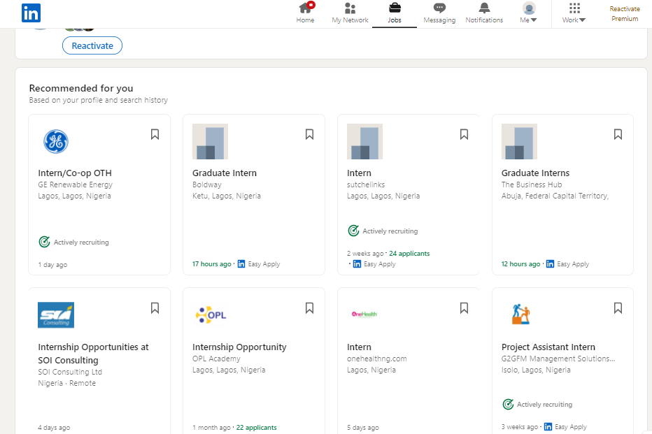
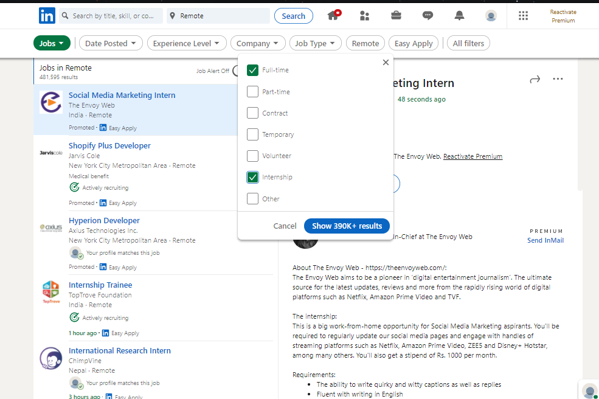
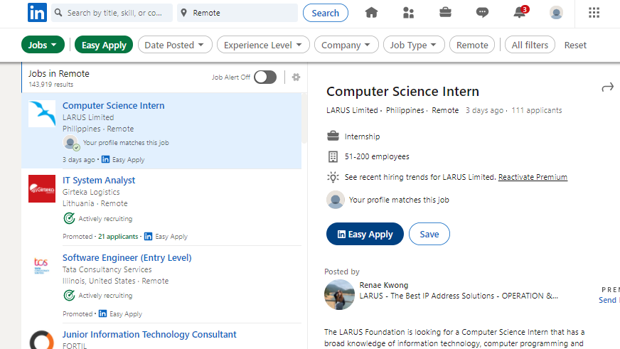

In this tutorial, you will be guided on how best to use LinkedIn in order to make the most out of it.
LinkedIn™ is the world's largest professional networking platform. It's also one of the most influential social media networks, with 756 million members. That's a lot of potential contacts! Members use the site to keep in touch with business associates, clients, and co-workers. But it can do so much more – boost your profile, build awareness of your brand, and help you to recruit the right people.
Step 1: Sign Up
LinkedIn™ provides two SIGN UP options to the user. It is up to the user to decide to either:
Sign up Google
Sign up With an Email address and password.
If you have already signed up, simply click the little blue link at the bottom of the box to sign In and start using LinkedIn™.
You can also click here to sign in!


Step 2: Job Search
After signing in, you can locate a "job" icon at the top left corner of your feed page.
Clicking on this icon will take you (the user) to a different page that allows you to search for job opportunities using specific factors/ filters such as search by Title, Skill, Company or even Location. One can even search for jobs that are specifically remote.
Below the search bar are options/job opportunities already listed based on what the user previously inputted in their profile information and job opportunities based on the user's previous searches.
After specifying location in the search box, the next page will reveal some job options as well as filters to further narrow down and focus the user's search.
The user will be able to find jobs based on their personal professional experience, qualifications and even search for jobs in specific companies.

1

2

3
Step 3: Networking
After you sign into LinkedIn™, Click Here to learn more about all the networking opportunities that LinkedIn™ provides.
LinkedIn not only has an algorithm that enables students and alumni to form a strong connection. LinkedIn also provides a platform that enable recruiters and job-seekers to communicate their needs with each other. It acts as a "professional social platform" and gives the LinkedIn using job-seeker an edge over the job seeker that does not use LinkedIn.
LinkedIn™ also has an Easy Apply feature that enables job seekers to apply to various different jobs with a simply keystroke or two.
The user, however, must have a resume and/or cover letter uploaded and ready to go.

Step 4: Help Center
Finally, never be afraid to seek help. LinkedIn™ has an entire site dedicated to helping its users. Click Here to access the LinkedIn help centre.
Note that you must be signed in to access the link above.
Step 5: Video Tutorial
In the unlikely event that all the steps provided are not helpful, 😜 . Below is a video that explains in detail all the steps necessary for you to get acclimated with LinkedIn.